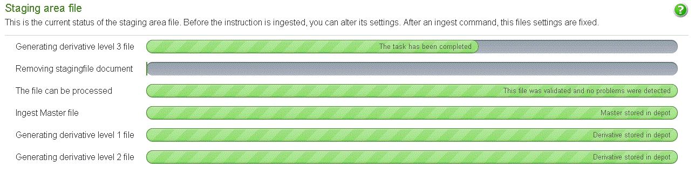
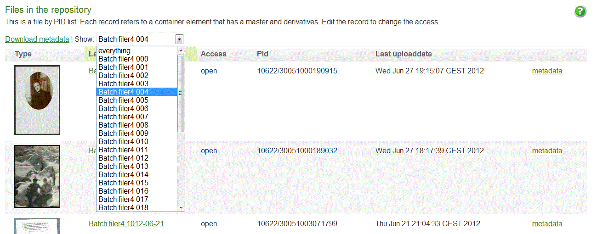

8 Administration interface - Reference Documentation
Authors: Lucien van Wouw
Version: 1.4
Table of Contents
8 Administration interface
The administration interface is where a CP administrator can:- create ftp accounts.
- set a profile. That is, defaults for the processing instruction such as access, mimetype, the prefered services to use
- define access policies
- oversee the production of instructions, starting procedures and monitor the status
- download technical metadata of stored material
8.1 Staging area Ftp accounts
Upload and file arrangements are done with an ftp client. You can manage the required ftp accounts at the "Staging Area" section.Create a user
Fill in or edit the following fields:Login name: A user name containing letters and numbersPassword: If the password is left blank, a random password will be createdE-mail: The end-user's mail address.Enabled: If on, the account can be used to login.
Editing and removing
Any account can be modified and deleted. If you delete an ftp account; the user's uploaded files and home directory still remain on the staging area. You need to move or delete these yourself with your ftp administration account.8.2 Dissemination Accounts
The "Dissemination Accounts" section will allow you to manage user accounts. Such accounts can operate or download repository resources. You can specify what access policies are available to the user and what resources are available to the user and under that conditions.Create a user
You need to fill in or edit the following fields:Login name: A user name containing letters and numbersPassword: If the password is left blank, a random password will be createdE-mail: The end-user's mail address.Enabled: If on, the account can be used to login.Access Scope: see below for more details
Webservice key
Each account type has a webservice key. The key is intended to access an object repository resource that is normally closed for anonymous users. The key needs to be attached to the resolve URL that points to a resource. Or be in the header file of a client that is responsible for downloading the files.To modify the webservice key select "Change key"Each time you change the access scope settings, this key will change too. You must update your software client or inform the end user of the new key
Access Scope
This setting determines what a user can access.Set access by Policy
Your repository resources are governed by access policies. If the user is allowed to download files with one or more of these policies, then select them here.'all'
This account can access all resources, no matter their access policy.'administration'
This account type has the same scope as the 'all' setting. In addition it allows a client to operate the repository API. All actions regarding account and permission creation can be operated via API calls using the webservice key.Manage access to resources
Leave the access scope option blank and save the account. You can then show the account and select the 'manage access to resources' option. In this section you can specify the resources by it's PID or OBJID value. Select 'New Userresource' to add a new resource.ResourcePid: The PID value of the individual resource. Or objid of the resourcesDownload limit(default is no limit) : The number of times a user is allowed to download this resources. Set to zero for no limit.Apply downloadlimit for levels: The levels this download limit applies to.Expiration date(default is no date) : The end date the resource is available
http://[object repository domain]/resource?access_token=[webservice key]
Editing and removing
Any account can be modified and deleted. The webservice key will change when the Access Scope setting changed.8.3 Dissemination Accounts API
You can create new user accounts and defined the access to resources with API calls. To make those calls your client needs an administration account and it's webservice key that goes with it. The API will allow you to:- create a user account
- re-set a user account, refreshing the webservice key or password
- add or update access to resources; setting optional download limits and expiration dates
- delete a user account
- create 'administration' and 'all' accounts
- set policy access
- delete resources access
- create or update an account with a username created by a different object repository owner
Content type
The API content type can be JSON and XML. It's entry point is:http://[object repository domain]/[your naming authority]/userCreating an account parameters
- user.username: the login name
- user.password: the unencrypted password. If empty this will automatically create a password
- user.mail: an e-mail address
- user.resources: the list of repository resources that can be accessed with this account
- user.resources.userResource: a resource element with:
- pid: the PID of OBJID
- downloadLimit (default 0)
- expirationDate (default none): format YYYY-mm-DD
- buckets ( default 'master' ): a repeatable list of levels the downloadLimit and expirationDate apply to
Updating an account parameters
An existing account will be updated when you use the same user.username value- user.replaceKey ( default false ): will change the webservice key
Examples
To create or update a user account; and set the access for two resources, one with a download limit, another with an expiration date, sent:Request:POST /12345/user HTTP/1.1 Accept: */* Connection: Keep-Alive Content-Type: text/xml; charset=utf-8 Authorization: Bearer [webservice key]
<user> <username>a username</username> <password>a password</password> <mail>an e-mail address</mail> <resources> <userResource> <downloadLimit>100</downloadLimit> <pid>12345/a-pid</pid> <buckets>master</buckets> <buckets>level1</buckets> </userResource> <userResource> <expirationDate>2020-01-01</expirationDate> <pid>12345/another-pid</pid> </resources> </user>
{
user:{
username: 'a username',
password: 'a password',
mail: 'an e-mail address',
resources:[
{
pid:'12345/a-pid',
buckets:'master',
buckets:'level1',
downloadLimit:100
},
{
pid:'12345/another-pid',
expirationDate:'2020-01-01'}
]
}
}<user> <message>ok</message> <url>http://[repository-url]/resource/list?access_token=[webservice key]</url> <username>a username</username> <password>a password</password> </user>
{
"user":{
"message":"ok",
"url":"http://[repository-url]/resource/list?access_token=[webservice key]",
"username":"a username",
"password":"a password"
}
}8.4 Profile
The profile is where you set the default values that are taken over by any processing instruction. That is: Settings in the profile substitute any absent values in the XML processing instruction. It makes sense therefore, to place all your broad access policies and most frequently used file content values.The available options are described at the settings section.8.5 Access policies
A policy determines what an anonymous user can and cannot do. Lets say that is a person with a webbrowser who is not logged on to the object repository. Access to each master file and its related derivatives are thus governed by a policy.There are three main policies available:| policy | access |
|---|---|
| closed | no files can be downloaded or viewed |
| restricted | level 1 derivatives are restricted ; level 2 and 3 are viewable to the world |
| open | All derivatives are viewable to the world |
Custom policies
You cannot modify these default policies, but to add your own custom policy is easily done by selecting "New Policy". For each master and derivative you can determine it's access level.8.6 Managing and monitoring instructions
Each main folder in the staging area you see is represented here.The moment when a XML instruction is offered; or when it is autocreated, the number of declared files will show up. In addition each file will have a validation status. The files can be viewed by selecting the link of the main folder.Commands
Autocreate
This will autocreate an instruction. Press it and depending on the number of files, the instruction will be put into
the database.that the use of this service will not apply a checksum comparison between the content at the producer's side (outside the staging area that is ). And the material stored onto the staging area. The content producer should decide if the transport is reliable enough to ensure the data's integrity.
Recreate
This option is available at the "Stored objects panel". It will reconstruct an earlier used instruction.
This command will not work, if there are still files staged with an existing instruction.Download
One you created or uploaded an instruction, it can be downloaded as an XML instruction document.Unfortunately, the download onto to the staging area of an instruction is not possible because of server permissions. Choose the "download instructions via the browser" option in stead.
Upload
You can upload a XML instruction here so it will be placed on the staging area. FTP is also a way of uploading an
instruction.Validate
Will perform a check on the instruction vis-a-vis the files in the staging area.Process files
Kick starts the instruction
If you monitor the progress of for example an upload, creation or validation of an instruction it will eventually
finish. However no ingest instruction option seems to appear. To make it appear, press the browser's refresh button.
Monitoring
Each phase or step in the creation and running of an instruction can be monitored. The same for each individual files. During an ingest, you can see the accumulative result of all files by selecting the link of the main folder.Instruction status
This is the particular status of an instruction.
Files status accumulative
All progress for the files
Per file view
Success and retries
When all services of a file have completed, the file reference will be removed from the staging area. In the end all the declared files will be gone.Of course, things can go wrong. In that case the error is mentioned and nothing will happen until the issue is resolved. If you feel this is because of a bug or system application failure, please contact the service desk that operates the object repository.You can rerun instructions with different options. For example, because you want to change a label, access status, produce derivatives, etc.8.7 Stored files
The files section will show all persisted files. Using the dropdown list, you can filter by instruction label. Each file can be edited to change the policy and labeling.In addition, download all technical metadata as XML per file of for all the files. The XML does not follow a schema and is subject to change.Recreate instruction
If you select a label from from the dropdown list; then you can use that selection to recreate an instruction.Find by pid
Use the PID of a file to display it in the list. Or use the objid of the compound object to find all grouped files.